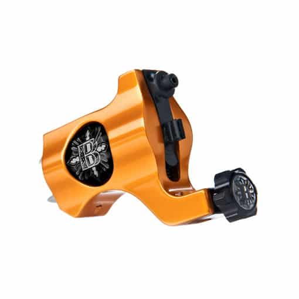
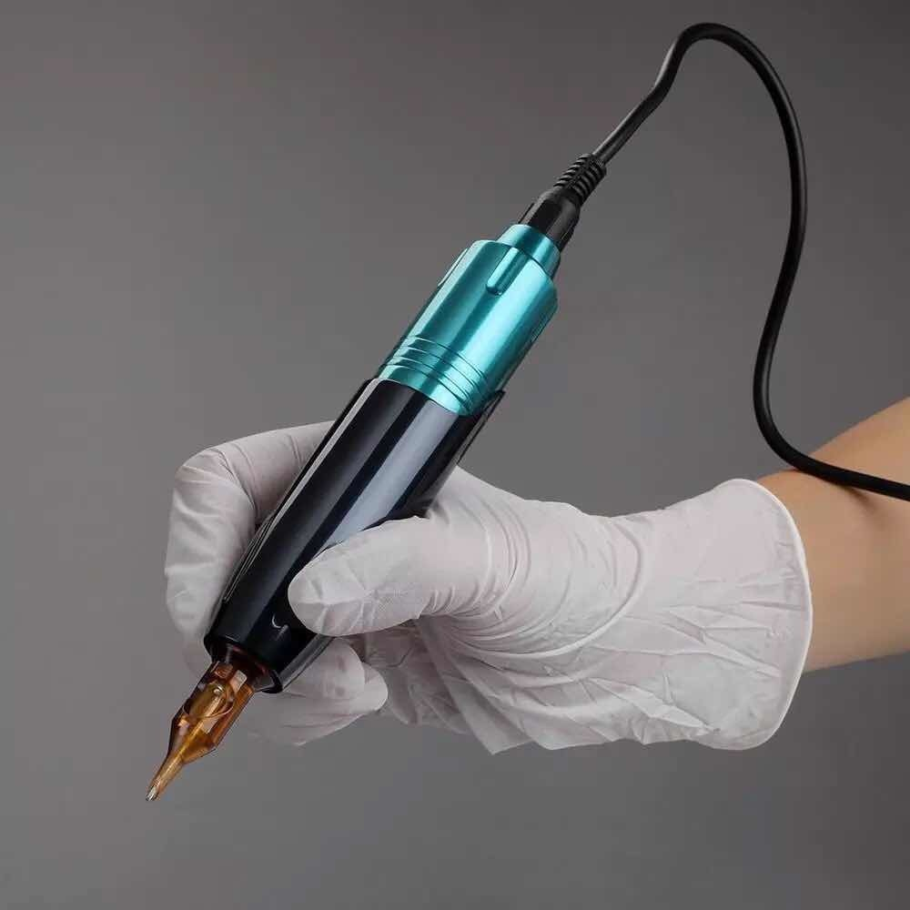
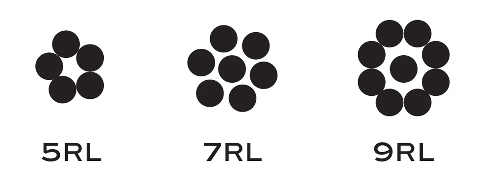
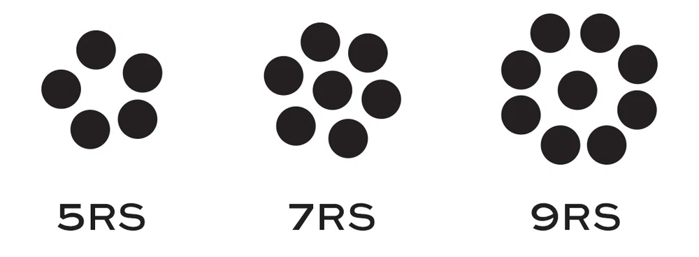
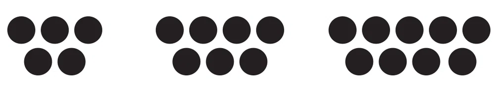

El Arte del Tatuaje: Más Allá de la Piel
El tatuaje, una forma de expresión artística arraigada en la historia de la humanidad, va más allá de ser una simple marca en la piel. Es un medio poderoso para contar historias, expresar identidades y fusionar creatividad con el cuerpo humano.
En esta página, podrás explorar y adquirir una amplia gama de productos relacionados con el mundo del tatuaje. Desde máquinas para tatuar y tintas de alta calidad hasta todo el material necesario para realizar tatuajes profesionales. También encontrarás una breve historia de los tatuajes, destacando su evolución a lo largo de los siglos.
Definición y Significado:
En su esencia, un tatuaje es la inserción de pigmentos de tinta bajo la piel para crear diseños duraderos. Estos diseños pueden variar desde símbolos pequeños y significativos hasta complejas obras de arte que abarcan grandes áreas del cuerpo.
Funcionamiento General:
La aplicación de un tatuaje implica el uso de una máquina de tatuaje especializada. Estas máquinas, ya sean de bobina o rotativas, utilizan agujas para depositar la tinta en la dermis, la capa más profunda de la piel. Este proceso asegura que el diseño sea permanente, ya que la dermis no se renueva con la misma frecuencia que la epidermis.
Tipos de Máquinas de Tatuaje:
Tipos de agujas:
Máquinas de Bobina: Tradición y Potencia

Las máquinas de bobina, también conocidas como máquinas de inducción electromagnética, son un pilar en la historia del tatuaje. Inventadas por Samuel O'Reilly en la década de 1890, estas máquinas han sido fundamentales en la evolución del arte del tatuaje.
Historia:
Samuel O'Reilly adaptó una máquina eléctrica diseñada originalmente para grabar números en carne para crear la primera máquina de tatuar de bobina. Esta innovación permitió a los artistas del tatuaje controlar la velocidad y la fuerza de la aguja de manera más precisa, revolucionando la industria y allanando el camino para la profesionalización del tatuaje.
Funcionamiento:
Las máquinas de bobina funcionan mediante un sistema de bobinas y núcleos de metal. Cuando se aplica corriente eléctrica, las bobinas generan un campo magnético que atrae y libera un brazo metálico unido a una aguja. Este movimiento ascendente y descendente de la aguja permite la inserción de tinta en la piel.
Estas máquinas son conocidas por su potencia y versatilidad. Son ideales para líneas definidas y sombreados, lo que las convierte en una opción preferida para artistas que buscan precisión y control en sus obras.
-
Agujas:
- Utilizan agujas tradicionales montadas en barras.
- Configuraciones comunes incluyen Round Liner (RL) y Magnum (M1, M2).
- Pueden adaptarse para usar sistemas de cartuchos en algunos casos.
-
Ventajas:
- Potencia y versatilidad.
- Ideales para líneas definidas y sombreados precisos.
- Amplia historia en la industria del tatuaje.
-
Inconvenientes:
- Mayor vibración y ruido en comparación con las máquinas rotativas.
- Requieren más ajustes manuales para cambiar la configuración de las agujas.
Máquinas Rotativas: Innovación y Versatilidad
Las máquinas rotativas, una evolución más reciente en la historia del tatuaje, han ganado popularidad gracias a su diseño compacto y suavidad en el uso. Desarrolladas en la década de 1970, estas máquinas han cambiado la dinámica del tatuaje contemporáneo.
Historia:
La máquina rotativa fue inventada por Manfred Kohrs, un ingeniero alemán, como respuesta a la necesidad de una herramienta más silenciosa y eficiente. Este tipo de máquinas fue adoptado rápidamente en la industria del tatuaje debido a su menor vibración y peso ligero.
Funcionamiento:
Las máquinas rotativas funcionan con un motor que impulsa directamente la aguja. Este diseño reduce la fricción y el ruido, proporcionando a los artistas mayor precisión en detalles finos y una experiencia de tatuaje más cómoda para los clientes.
Estas máquinas son versátiles y excelentes para líneas detalladas, sombreados suaves y rellenos de color. Su diseño ergonómico y facilidad de uso han contribuido a su creciente popularidad en la escena del tatuaje contemporáneo.
-
Agujas:
- Utilizan agujas específicas adaptadas para el movimiento rotativo.
- Configuraciones comunes incluyen Round Liner (RL) y Magnum (M1, M2).
- Son compatibles con sistemas de cartuchos (Con adaptadores).
-
Ventajas:
- Diseño compacto y suavidad en el uso.
- Menor vibración y peso ligero.
- Mayor precisión en detalles finos y comodidad para el cliente.
-
Inconvenientes:
- Mayor costo inicial en comparación con las máquinas de bobina.
- Menos potencia en algunas situaciones específicas.
Máquinas Tipo Pen: Innovación Ergonómica
Las máquinas de tatuaje tipo pen son la última innovación en la evolución de las herramientas para tatuar. Inspiradas en la simplicidad de los bolígrafos, estas máquinas ofrecen una experiencia ergonómica y cómoda tanto para los artistas como para los clientes.
Características:
Estas máquinas suelen tener un diseño similar a un bolígrafo, con la aguja ubicada en la parte inferior. Funcionan mediante un mecanismo de pistón o un motor que impulsa la aguja hacia adelante y hacia atrás. Su diseño ergonómico permite un control preciso y un manejo cómodo durante largas sesiones de tatuaje.
Ventajas:
La principal ventaja de las máquinas tipo pen es su facilidad de uso y su diseño ergonómico, lo que reduce la fatiga del artista. Además, son ideales para detalles finos y líneas precisas. Algunos artistas también aprecian la capacidad de ajustar la profundidad de la aguja de manera más sencilla.
Las máquinas tipo pen representan la última innovación en la industria del tatuaje, brindando comodidad y precisión a artistas y clientes por igual.
-
Agujas:
- Utilizan exclusivamente agujas de cartucho.
-
Ventajas:
- Diseño ergonómico inspirado en bolígrafos.
- Facilidad de uso y comodidad para artistas y clientes.
- Control preciso y manejo cómodo durante largas sesiones.
-
Inconvenientes:
- Menos potencia en comparación con algunas máquinas de bobina.
- Menor versatilidad en comparación con las máquinas rotativas para ciertos estilos.
Round Liner (RL)
Las agujas Round Liner son ideales para líneas nítidas y detalles precisos. Están dispuestas en una configuración circular, con un solo grupo de agujas alineadas en un círculo. Los tamaños comunes para las Round Liner incluyen 3RL, 5RL, 7RL, etc. Cuanto menor sea el número, más finas y estrechas serán las agujas, permitiendo líneas más delicadas.
Se suelen hacer agrupaciones desde 1 a 20 agujas, pero esta cifra puede variar en función de cada artista.
Round Shader (RS)
Las agujas Round Shader también están dispuestas en una configuración circular, pero están diseñadas para sombreado y relleno. Vienen en tamaños como 5RS, 7RS, 9RS, etc. Cuanto mayor sea el número, más ancha será la agrupación de agujas, lo que permite un sombreado más suave y una cobertura más rápida.
Las agrupaciones de la Round Shader van de 3 a 30 agujas aproximadamente.
Magnum (M1 M2)
Las agujas Magnum se utilizan para sombreado y relleno en áreas más grandes. Hay dos tipos principales: Magnum Simple (M1) y Magnum Doble (M2). Las Magnum Simple tienen una fila de agujas, mientras que las Magnum Doble tienen dos filas paralelas. Los tamaños comunes son 7M1, 9M1, 11M2, etc. Las Magnum son versátiles y permiten un sombreado suave y uniforme.
Permite agrupaciones de entre 5 y 49 agujas aproximadamente, aunque con las Magnum podemos extendernos con las cantidades de micropuntas si el tatuaje lo requiere.
Curved Magnum (RM)
Las agujas Curved Magnum tienen una disposición curva de las agujas, lo que las hace ideales para seguir los contornos naturales del cuerpo. Son excelentes para sombreado y relleno en áreas más grandes, proporcionando una apariencia suave y fluida. Los tamaños comunes son 9CM, 13CM, 15CM, etc.
Las agrupaciones de la RM oscilan entre 5 y 49 agujas, igual que las demás Magnums.
Flat Magnum (F)
Por último, encontramos la Flat Magnum, que distribuye las agujas muy juntas en una sola línea. Sirve para sombrear de forma densa y crear formas geométricas ya que sus bordes se verán bien delimitados a la hora de tatuar.
La Flat Magnum permite agrupaciones desde 4 a 11 agujas aproximadamente. De nuevo, debe quedar claro que estas cantidades pueden variar dependiendo del artista y sus necesidades.
Gastos de envío
| Zona | Tipo de envío | Coste | Tiempo de entrega |
|---|---|---|---|
| Península | Exprés | 10,99 € | De 24 a 72 horas |
| Islas Baleares | Correo ordinario | 15,99 € | de 10 a 15 días |
| Islas Canarias | Correo ordinario | 15,99 € | de 10 a 15 días |
| Internacional | Correo ordinario | Contáctanos | Contáctanos |
| Compras superiores a 150 € envío gratis! (Sólo nacional) | |||